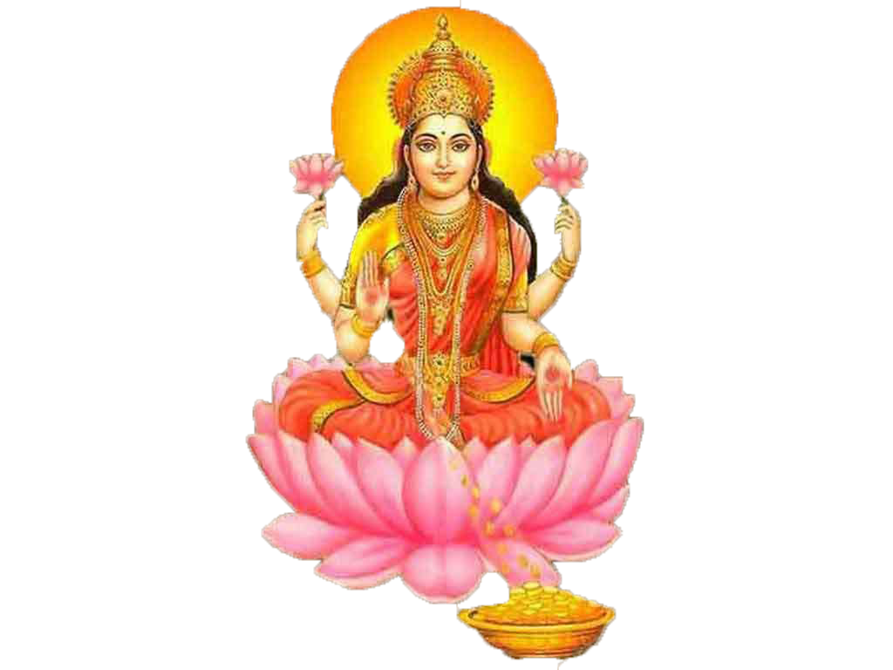

Laxmi Puja - Worship of Goddess Laxmi
Laxmi Puja: Worship of Goddess Laxmi
Laxmi Puja is a sacred Hindu ritual dedicated to Goddess Laxmi, the embodiment of wealth, prosperity, and well-being. This puja is performed to seek her blessings for financial stability, success, and removal of obstacles.
What is Laxmi Puja?
Laxmi Puja is a powerful ritual in Hinduism dedicated to the worship of Goddess Laxmi, who symbolizes wealth, prosperity, and abundance. She is believed to bless her devotees with wealth, good fortune, and success in their endeavors. Performing Laxmi Puja is considered auspicious for seeking her divine blessings for financial well-being and success.
Why Do We Perform Laxmi Puja?
- Wealth and Prosperity: Laxmi Puja is performed to attract wealth and prosperity into one’s life.
- Removal of Obstacles: The puja helps in removing financial obstacles and difficulties, bringing ease in business and personal life.
- Success and Growth: Worshipping Goddess Laxmi helps in achieving success in career, business, and personal endeavors.
- Happiness and Well-being: Laxmi is the goddess of happiness and well-being, and her worship ensures peace and harmony in the household.
- Gratitude for Blessings: Laxmi Puja is also a way to express gratitude for the blessings of prosperity and wealth already received.
Benefits of Laxmi Puja
- Attracts Wealth: Laxmi Puja is believed to attract wealth, material abundance, and prosperity into the devotee's life.
- Success and Prosperity: The puja ensures success in business, career, and personal projects.
- Removal of Financial Obstacles: It removes blockages and hurdles in financial matters, promoting smooth financial transactions.
- Peace and Happiness: Goddess Laxmi’s blessings bring peace, harmony, and happiness to the home and family.
- Spiritual Growth: The puja fosters spiritual growth and well-being, helping individuals lead a balanced and prosperous life.
How to Perform Laxmi Puja (Step-by-Step)
Laxmi Puja is traditionally performed during Diwali or on Fridays, which is considered an auspicious day for Laxmi worship. Here is a step-by-step guide to performing the puja:
- Preparation: Set up a clean space or altar with an image or idol of Goddess Laxmi, flowers, incense, a lamp (preferably ghee), and offerings such as sweets, fruits, and coins.
- Cleanse Yourself: Take a bath and wear clean clothes, preferably in bright colors like red, yellow, or gold, which are associated with wealth.
- Offer Flowers and Incense: Offer fresh flowers to Goddess Laxmi, and light incense to purify the surroundings.
- Chant Laxmi Mantras: Recite powerful Laxmi mantras such as "Om Shreem Maha Lakshmaye Namah" or "Om Laxmi Namah" to invoke her blessings.
- Offer Prayers: Pray for wealth, success, happiness, and the removal of financial obstacles.
- Conclude the Puja: Perform the Aarti (lighting a lamp and moving it in a circular motion) while chanting mantras to honor Goddess Laxmi.
- Prasad (Offering): Offer prasad, such as sweets, fruits, or coins, to Goddess Laxmi and distribute it among family members or devotees.
- Regular Practice: Performing Laxmi Puja regularly, especially during Diwali or on Fridays, helps receive her full blessings for prosperity and success.
Conclusion
Laxmi Puja is a sacred and powerful ritual that brings wealth, success, and spiritual growth to the devotee. By regularly performing Laxmi Puja, one can overcome financial obstacles, achieve prosperity, and gain wisdom and peace under the divine guidance of Goddess Laxmi.